Södermalm i tid och rum
12.
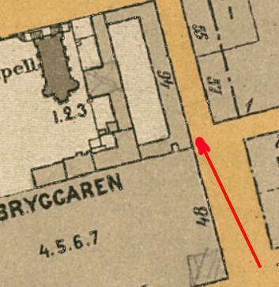
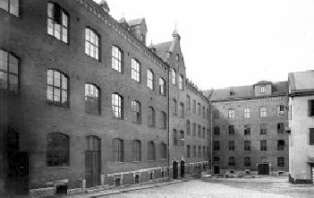
Hellgrens tobaksfabrik i hörnet av Götgatan och Åsögatan. Gårdsinteriör
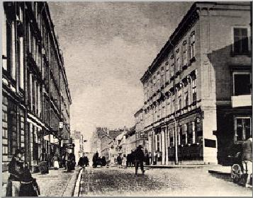
12.
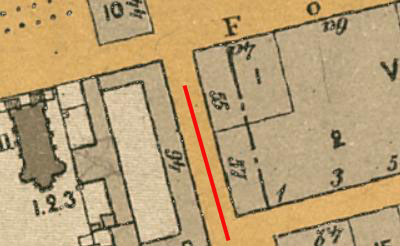
{kind=link}
Från Wikipedia:
Wilhelm Hellgren & Co var en tobaksfabrik i kvarteret Bryggaren (dagens kvarteret Nattugglan). Verksamheten började i blygsam omfattning på 1840-talet och blev kring sekelskiftet 1900 Skandinaviens största tobaksfabrik.
Götgatan 48/Åsögatan 53-55. W.M. Hellgren & Co År 1915 övertogs verksamheten av statligt ägda Svenska Tobaksmonopolet och fabriken stängdes 1922. På 1940- och 70-talen revs de flesta byggnader. Den enda kvarvarande byggnaden från tobaksfabriken är det så kallade "Hellgrenska palatset" vid Götgatan 64-68.
|
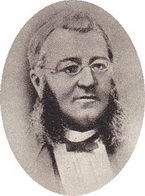 Wilhelm Hellgren |
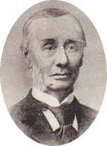 Johan Bäckström |
De tidiga åren
Tobaksfabriken är uppkallad efter Carl Anton Wilhelm Hellgren (född 1810, död 1877). Han var son till skorstensfejarmästaren Johan Fredrik Hellgren och dennes hustru Maria Teresia, född Braun. I oktober 1840 erhöll Wilhelm Hellgren privilegium att driva en snus- och tobaksfabrik i Stockholm.
Tillverkningen började i blygsam omfattning med fem medarbetare i hyrda lokaler vid Götgatan 48 (dagens 66), alltså i samma kvarter där fabriken kom att ligga under hela sin produktionstid. Där bodde han även med hustru Mathilda Lovisa och sonen Wilhelm. Firman hade till en början egna tobaksodlingar på de sanka ängarna vid den närbelägna Fatburssjön.
|
|
Den som utvecklade företaget att så småningom bli Sveriges och Skandinaviens största tobaksfabrik var Johan Bäckström (född 1826, död 1902), som i 18-årsåldern började som kontorist i den Hellgrenska firman och snabbt arbetade upp sig. I mars 1851 bildades firman W:m Hellgren & C:o under ledningen av Bäckström. Samtidigt lämnade Hellgren firman för att ägna sig åt fastighetsaffärer tillsammans med Lars Johan Hierta, bland annat inköpte de Årsta slott i Österhaninge socken. Expansion genom uppköp Genom en rad uppköp expanderade företaget och i takt med att firman växte utökades fabriksområdet i kvarteret Bryggaren, som begränsas av Folkungagatan i norr, Götgatan i öster, Åsögatan i söder och Västgötagatan i väster.
|
| År 1853 förvärvades de första fastigheterna vid Götgatan. 1865-66 uppfördes här en påkostad byggnad efter ritningar av arkitekt Johan Fredrik Åbom, gestaltad i nyrenässans och typiskt för Åbom med pilasterindelat mittparti, takbalustrad och fronton. På grund av sitt palatsliknande utseende kallades huset "Hellgrenska palatset". I huset Hellgrenska palatset fanns bland annat en stor paradvåning i två etage, bostäder för verkmästare och portvakt samt kontor och torkvind. Genom en central anordnad portal kunde transporterna ske mellan innergården och Götgatan. I bottenvåningen av Hellgrenska palatset på Götgatan 64 finns numera restaurangen Den gröne Jägaren. |
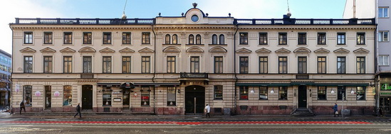 |
{kind=link}
|
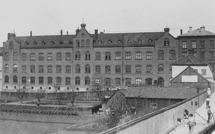 Tegelborgens fasad mot Åsögatan 1900
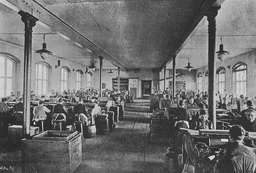 |
I början av 1890-talet byggdes den stora cigarrfabriken vid Åsögatan. Den monumentala tegelbyggnaden kallades "Tegelborgen". Arkitekt och byggmästare till Tegelborgen var Carl August Olsson. Fabrikens fasader präglades av höga bågformade fönster och ankarslut i järn. I de stora produktionssalarna fanns gjutjärnskolonner med omsorgsfullt utarbetade kapitäl. Fabrikens arbetare, övervägande kvinnor, satt i långa rader utmed långsidorna och i mittenkorridoren gick vagnar på räls. I kvarteret förekom även annan industriverksamhet, exempelvis för Stockholms Södra Ångqvarns och Vedsågeri AB från 1870-talet, vars lokaler övertogs av Hellgren & Co 1913 och byggdes om efter ritningar av arkitekt Edward Ohlsson. I och med detta förvärv ägdes hela kvarteret av Hellgren & Co med undantag av tomterna I,II och III (S:t Eriks kapell, Paulis malmgård samt gathuset Götgatan 58-62) vilka ägdes av Sankt Eriks katolska församling. Kring sekelskiftet 1900 hade företaget vuxit till Skandinaviens största tobaksfabrik. Då hade man även övertagit Brinck, Hafström & Co som hade sin fabrik i nuvarande kvarteret Stenbocken på Södermalm. Det fanns omkring 700 arbetare i fabriken, de festa (575) var kvinnor som rullade cigarrer, limmade cigarrlådor eller matade cigarettmaskinerna. Marknadsföring och produkter W:m Hellgren & Co deltog i Konstindustriutställningen 1909 i Stockholm. Vid Stockholmsutställningen 1897 hade Hellgren & Co en egen paviljong som de kallade "tobakshyddan" och firman utgav En liten bok om tobak samt lanserade en speciell utställningscigarett- och cigarr i plåtask med motiv från utställningsområdet på utsidan. Till olympiska sommarspelen 1912 i Stockholm utkom Stadion, en cigarr i träask med bild av Stockholms skyddshelgon, S:t Erik. Företaget hade även ett antal försäljningskontor i Stockholm, bland annat vid Hornsgatan, Artillerigatan, Regeringsgatan och Gustaf Adolfs torg. |
{kind=link}
{kind=link}
|
Till Hellgrens talrika produkter hörde bland annat Känn på den tobaken (piptobak), Bouquet (cigarr), Cat Plug (piptobak), Chandelupe No. 1 (piptobak), El Gusto (cigarr), Gluntarne (cigarr), Golden Shag (piptobak), Tribuna (cigarr), Snus No. 1 samt Grovsnus som tillverkades sedan 1872 och blev en allvarlig utmanare till marknadsledaren, Ljunglöfs No. 1 från konkurrenten Jacob Fredrik Ljunglöf. Grovsnus, kort Grov, säljs fortfarande idag (2017). Största produktionsvärdet utgjordes 1897 av snus med 686 210:75 kronor följt av cigarrer med 639 247:89 kronor och piptobak med 251 120:10 kronor. Efter övertagandet genom Svenska Tobaksmonopolet fortsatte produktionen av många av Hellgrens märken under monopolet. |
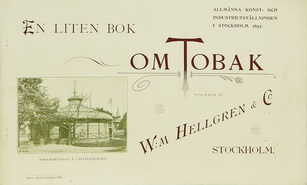 |
{kind=link}
|
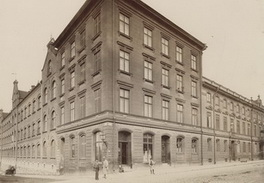 Hörnet av Götgatan och Åsögatan |
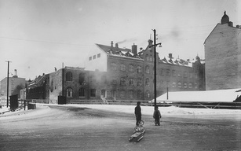 Tegelborgen på Åsögatan rivs 1946 |
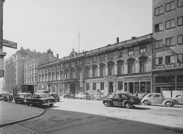 Hellgrens palats mot Götgatan |
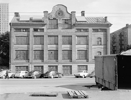 Fasad mot Folkungagatan |
{kind=link}
{kind=link}
{kind=link}
{kind=link}
|
Monopolet tar över, avveckling och rivning
År 1911 bildades aktiebolaget W:m Hellgren & C:o med ett aktiekapital om två miljoner kronor och med Johan Bäckströms söner, John och Walter som ledare. Året efter monopoliserades tobaksindustrin i Sverige genom bildandet av trusten AB Förenade svenska tobaksfabriker, där Hellgren & Co spelade en central roll och där John och Walter Bäckström hade framskjutna positioner. 1915 inlöstes verksamheten av Svenska Tobaksmonopolet. Tillverkning i kvarteret Bryggaren lades ner 1922.
En del av företagets fabrikslokaler nyttjades därefter av andra företag och några revs 1946 i samband med Södergatans utbyggnad vilken delade kvarteret i två halvor. Då försvann även västra delen av Tegelborgen. Sedan 1984 går trafikleden i tunnel under kvarteret.
De västra och södra delarna av kvarteret revs 1972 och ersattes med en kontorsfastighet för dåvarande Skattemyndigheten. I mitten av 1970-talet försvann slutligen resten av Tegelborgen och hörnhuset mot Götgatan. Där uppförde Riksbyggen på 1980-talet sin stora bostadslänga vid Åsögatan 101-107. Även Hellgrenska palatset skulle rivas, men det satte Museinämnden 1969 stopp för. Därför står Hellgrenska palatset kvar än idag och påminner om en stor industriepok som kring sekelskiftet 1900 hade sin glansperiod på denna plats. Byggnaden är blåklassad av Stockholms stadsmuseum vilket innebär att bebyggelsens kulturhistoriska värde av stadsmuséet anses motsvara fordringarna för byggnadsminnen i Kulturmiljölagen.
|